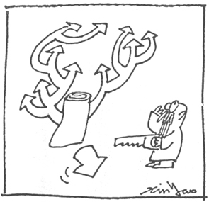
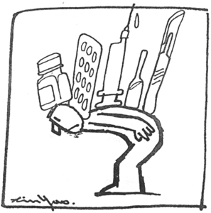
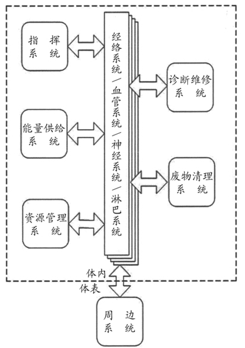
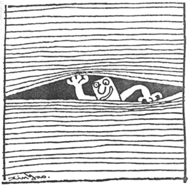
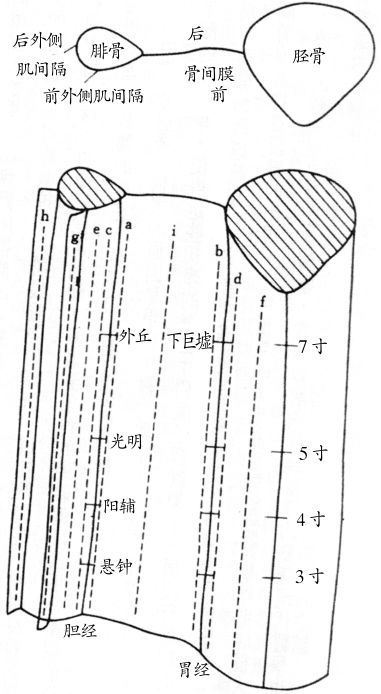
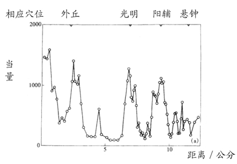
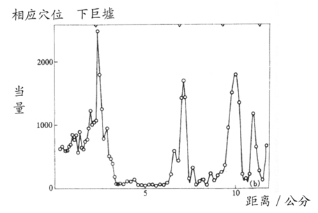
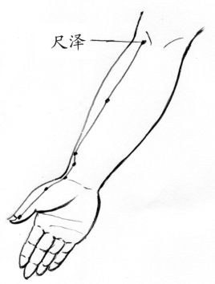
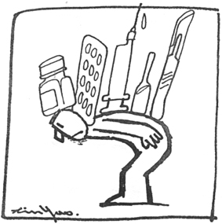
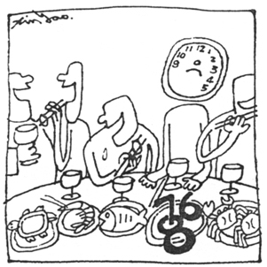

第二章 人体的系统
中国的医学理论和西方的理论在根本上有很大的差异，中医的理论认为人体是一个完整的系统。古代聪明的中国医生发明了阴阳和五行的理论。五行是利用自然界五种不同特性的元素来比拟人体的五种不同的主要器官。金、木、水、火、土等五种元素，对应于人体的五个主要脏器：肺、肝、肾、心、脾，其中每一个器官对应一种元素，肺对应于金；肝对应于木；肾对应于水；心脏对应于火；脾脏对应于土。
古代的人类并没有任何解剖学的知识，人体内部的器官对大多数人而言，都是非常抽象的，除了用想象的之外，没有什么好的方法来形容。不但器官的形体无法形容，器官的性质和功能就更不容易说明了。自然界的金、木、水、火、土这些元素，多数人都能理解其特性，因此非常适合用来把抽象的人体器官性质解释清楚。同时这些元素的性质，也提供医生们思考和演绎疾病成因的灵感来源。
中医理论认为人体的器官不是独立存在着，每一个器官都是一个系统，包含了器官本体，以及和每一个器官相对应的经络和穴位。这种情形和现代的电灯系统有点类似，器官就像灯泡一样，经络则像是接引电源至灯泡的电线，穴位则像是接在电线上的开关。包含电灯、电线和开关的完整组合，才能称之为电灯系统。当灯泡不亮时，可能是没有电，也可能是开关坏了，或电线有问题，或灯泡坏了。而器官的功能不好时，可能是身体的血气（能量）不足（就像电灯没有电），也可能是穴位阻塞（就像开关坏了），或经络堆了太多的垃圾形成不畅通的状态（就像电线有问题），或器官出了问题（就像灯泡坏了）。

在一知半解的身体上切切割割必定带来更多的问题。
中国人有一句俗语，“头痛医头，脚痛医脚”是用来形容医疗技术非常差的医生。当病人出现疾病的症状时，医术高明的中医必需仔细观察病人，利用学自古代医书的技术，以及长期累积的经验，找出疾病的真正根源。例如当我们喝温度很低的冰水时，如果喝得很急，常常会造成脸部侧面的一条直到额头太阳穴的线状部位疼痛。从中医的观点，那条疼痛的线是胃的经络，因此，这种疼痛代表喝冰水太急时，会伤到胃。也就是这种额头上的疼痛实际上却是胃的疾病。胃的经络分布的位置是从头部到脚部左右对称很长的两条线，如果未来在这条经络的头部出现疾病的疼痛时，中医会认定是胃的疾病，但是却可能在胃经脚部的穴位进行针灸。
也就是头部的疼痛，有时是要在脚上治疗，“头痛不一定医头，脚痛不一定医脚”。在古代的中国，如果一个医生只会“头痛医头，脚痛医脚”，人们一定会怀疑他医疗技术的能力。
中国人的这种“脏”和“腑”的分类方法，具备了极高的观察力和智慧。
五脏六腑是中国人用了几千年的一个名词，就是指人体内的主要器官。中国人把人体内部的主要器官分为“脏”和“腑”两个大类。“脏”是指实心或有机构的器官，有心、肝、脾、肺、肾五个脏。“腑”是指空心的容器，有小肠、胆、胃、大肠、膀胱等五个腑，另外将人体的胸腔和腹腔合并起来是第六个腑，称为三焦。
脏和腑除了在性质上有很大的差异之外，其经络的位置也有很大的不同。所有脏的经络都在手臂和腿部的内侧，以及身体的前侧。腑的经络则在手臂和腿部的外侧，以及身体的背面。当人体面临危险的威胁时，会本能的曲起身躯，所有脏的经络都在身体的内侧，受到了非常好的保护，只有腑的经络暴露在外。相较之下，脏的重要性远比腑重要，如果人的身体真的是造物主所设计，这样的安排是非常合理而高明的。中国人的这种“脏”和“腑”的分类方法，具备了极高的观察力和智慧。
另外，古代的中医还发现每一条脏的经络都和另一条腑的经络紧密相连。例如手臂上肺的经络和大肠的经络分别在手臂的内外两侧，用针刺治疗穴位时，如果针尖到达的位置是经络真正的所在，那么肺和大肠的经络实际上可能只有数毫米的距离。
虽然从解剖学来看，肺和大肠是在完全不同的位置，甚至找不出任何关联。但是从经络上看，这两个器官却是紧密相连的，而两条经络上的各种物理特性，例如温度、导电性、体液流动等，都会互相受到密切的影响。古代的中医就把这两个器官视为相同的系统，称为“互为表里”。
中国的医生们经过几千年的观察，也确认这两个器官发生变化时，经常是同步而且出现同一性质的变化。例如，出现感冒的症状时，在中医认为是肺热的现象（热和寒的症状是中医对于疾病诊断中非常重要的指标），这时通常也会伴随着便秘的症状，中医称这时的便秘为大肠燥热症。
肺与大肠互为表里的情形也发生在心和小肠、肝和胆、脾和胃、肾和膀胱。这种“脏腑互为表里”的归纳方法，把原来的十个器官减少到五个体系，人体系统分析诊断的复杂程度立刻大幅下降。这样也有机会用五行中的五个元素，来描述所有脏和腑之间复杂的相互关系。
除了这五个主要的脏和腑之外，古代的中医还发现另外有四条主要的经络。第一条是在手臂内侧的中心在线，称为心包经，和心包的机能有密切关系，这条经络功能的好坏直接影响血液运行的状态。第二条在手臂外侧的中心在线，称为三焦经，经常会反映胸腔和腹腔的问题，这条经络功能的好坏直接影响“气”的运行状态。第三条在人体躯干正面的中心在线，称为任脉，第四条在人体背面，称为督脉。任脉和督脉与身体所有器官都有关联，是人体最重要的经络。
中医的观点中，人体是一体的，五脏六腑之间互相有非常紧密的关系，而且是经常保持平衡的。
由于心包和心脏是在一起的，而三焦却和所有其它的腑没有关联，因此，中国人就把所有脏腑称为“五脏六腑”。五脏是心、肝、脾、肺、肾，其中的心包含了心和心包两个系统；六腑则是小肠、胆、胃、大肠、膀胱、三焦。除了前面所说的五脏和五腑互为表里外，心包和三焦则是另一组互为表里的经络。
比较中、西医对人体系统的描述，可以看出，西医是从近代的解剖学为基础，以眼睛所见的硬件结构来建立的系统，各个系统都是独立的，系统之间并没有太多的关系。中医则是累积了数千年人类经验所形成的智能，以推理的方式，就整个人体的软硬件结构建立一个具备了缜密的逻辑和结构的系统，因此能够沿用数千年。
在中国古代的书籍中，很少提到“脑”，这也是中西医概念上很大的差异之一。
中医的观点中，人体是一体的，五脏六腑之间互相有非常紧密的关系，而且是经常保持平衡的。除了解剖学所提到的硬件之外，中医更有许多概念性或功能性的系统。例如能量系统、资源管理系统等。这些系统在过去科技不发达，没有仪器量测的年代，由于缺乏数字概念，医书中只能用各种特殊的文字来描述这些系统。如能量系统就用阴、阳、五行、虚、实、血气和火来描述；资源管理系统则用相生相克、平衡及其它的方式来描述。由于这些描述和现代科学精确的数据化用语有很大的差异，使得整个中医看起来成为难以理解的玄学。
在中医的系统中，还有一个非常重要的部分，就是人体的经络系统。
从现代工程学来看，以人体这样一个独立运行的系统而言，利用解剖学所建立的现代医学人体系统有很多缺陷，少了许多东西。例如，能量系统是所有独立系统中不可或缺的部分。就像个人计算机中的电源供给系统，汽车上的油路系统和电路系统都是系统中的能量系统，是非常重要的部分，唯独在医学所描述的人体系统中就没有这个部分。
在中医的系统中，还有一个非常重要的部分，就是人体的经络系统，这个部分多年来在解剖学上一直都不能被证实，直到1998年中国大陆的一个科研小组经过8年的努力，总算在解剖中找到经络确实存在的证据，发现整个经络系统中最重要的物质是一种生物液晶的材质，同时对某些特定波长的远红外线具有近似光纤维的物理特性，这些新的发现配合20世纪末全球计算机网络的发展，很容易让人联想到人体是否也是由一个网络系统所构成的世界？这些经络物质和电子通信网络中的物质特性如此接近，更增添了这种可能性。

现代医学最大的问题是：低估了人体自身的智慧，高估了人类知识的能力。
从生物的进化过程中，早期的低等动物并没有大脑，经络系统是这些动物体内主要调节各个脏器的机构。以现代计算器术语来说，这些经络系统本身就具备通讯的功能，一个机体很可能不只一个计算机，也就是说动物的机体很可能不是只有单一的脑子，而是由很多个不同功能的脑子构成的一个网络系统组成的。这个观点和现代医学认为大脑是人体诸多机能的主宰有很大差别。
人体是具有很高智慧的机体，并且有许多不同的能力，利用现代工程和管理的知识结合对古老中国传统医学的概念，可以仿照计算器的结构，画出另一种人体的结构方块图（图一）。
这个方块图将人体分为五个功能方块和四个网络系统，分别详述于后。利用这种人体结构的思考逻辑，可以对多数慢性病理论重新进行界定，发展出新的病理逻辑。再依据这个新的病理逻辑，拟定完全不一样的治疗方案，有机会对慢性病的治疗开创出一条新的途径。
多数慢性病，是我们错用了身体的结果。我们需要的，不是灵丹妙药，而是一本正确的人体使用手册。

图一 人体系统方块图
人体的功能系统
指挥系统
主要由大脑构成，担负思考及指挥身体的机能，但是各个脏器的运行，并不是由这个系统所指挥。指挥系统是利用神经系统将人体各部位的状况传达到大脑，并将大脑的指令直接传达到人体的各个部位，让人体能够对各种外来的刺激作出迅速的反应。
许多低等生物并没有大脑，这些生物没有逃亡和攻击的能力，只能无意识地活动，多数的行动均很缓慢。但是这些生物都有和人体五脏六腑类似的脏器功能，能够呼吸、吸收营养、排泄废物等。这说明了大脑可能是生物进化过程中，为了适应外界环境，能够快速运动时，才产生的脏器。
在人体的网络结构中，大脑更像是一个企业计算机网络中总经理（CEO）的终端机，各个脏器则更像是网络中不同功能的服务器（Server）。
也就是人体的大脑更像一个人体系统的使用者，人体的系统维护则另有负责的机构。
简单地说人体实际上自备了一个能源材料制造中心和一个发电厂。
能量供给系统
任何一个独立的系统必定存在着一个能量供给的子系统。例如，计算机的电源供给器和汽车的油箱和油路系统，人体也必定存在着类似机能的系统。
不过人体的能量供给系统并不像计算机和汽车一样具备明显而独立的硬件。电能和汽油都是很容易使用的能源，但是人体所吃进去的食物种类非常多，也不是可以立即当成能源使用的物质形态。因此，当这些材料进入人体之后，必须经过非常复杂的处理手段，才能转变成类似电能和汽油般容易利用的能源，再送到身体的各个部位使用。简单地说人体实际上自备了一个能源材料制造中心和一个发电厂。因此，人体的能量供给系统也就远较汽车和计算机复杂得多。
人体的能量供给系统是由消化系统将食物转化成人体可以运用的材料，再于适当的时辰，人体进入熟睡状态时，将这些材料转化成人体可以方便利用的血液。因此，人体的能量供给系统至少包括了消化系统加上造血系统和心血管系统，众多的硬件系统才能构成能量供给系统。
应酬的晚餐，所支付的不只是金钱还得付出宝贵的造血时间。
就像汽车没有油或油路不顺，计算机没有电或电压不足，都会使系统造成严重的运行障碍，甚至完全瘫痪一样。人体的能量不足也必定会对人体造成很大的伤害，很可能是各种慢性病最主要的原因，更可能是造成多数人死亡的真正原因。
因此，彻底明白这个系统，并找出适当的检测手段，使人体的能量水平能像计算机的电压及汽车油箱中的油量一样，可随时测量，才能对人体疾病进行正确的诊断，也才能找到疾病真正的原因。同时也要发展出一套可以很简单就提升人体能量的方法，才能有效克服疾病。
资源管理系统
“透支体力”是我们的日常用语，许多人都有持续长时间休息不足的“透支体力”经验。长期透支体力的人当中，有些人感觉体力愈来愈好，也有些人明显感觉体力愈来愈差，但是仍然都能维持身体的正常运转，并没有立即出现严重疾病的症状。
显然人体内部有一个和计算机软件类似形态的资源管理系统，我们目前仍然不知道它的硬件是人体的哪一个部分。但是它随时都用最有效的方法调度人体的资源，当正常的资源不足时，会将身体其它形式储存的资源转化为立即可用的资源，提供人体“透支体力”时的能量来源。
古时候中医诊断所用的阴、阳、虚、实等名词，用在描述人体的整体状态时，就是对人体这种能源调度的描述。
这个系统拥有高度的智能。当人体长期“透支体力”时，可以在尽量不影响人体运行的前提下，从身体各个部位调动资源供人体透支所需，直到所有资源全部用光为止。通常这种“透支体力”的行为可以维持数十年，而人体仍然能正常运行。
当人体在调用储存的能源时，必定会在体内进行特殊的化学程序，将人体的能量进行转换。因此，这时人体的各种检查指标，如血液中蛋白及血糖的含量都会产生变化。
也就是说当人体不断的透支体力时，身体会不断地调整其化学工厂中的各种生产流程，来应付逐渐恶化的环境。许多慢性病所检验出来不正常的化学指标，很可能代表着身体在不同应变措施下的状态。只有彻底明白人体透支体力时采用的各种不同能源调度方法，才能正确解读身体检查时所测出来不正常指标的真正意义。
古时候中医诊断所用的阴、阳、虚、实等名词，用在描述人体的整体状态时，就是对人体这种能源调度的描述。例如“阴”代表储存的能源，“阳”代表日常生产的血气能量，“阳虚”就代表日常生产的能源不足，也就是中医所说的血气不足，“阴虚”则说明储存的能源正在透支。
另外，“血气”代表日常产生的能源，透支的能源则称之为“火”。“阴虚火重”则说明人体正在大量透支储存的能源，“阴阳两虚”则说明日常能源生产不足，而储存的能源也快用完了，也就是“血气”不足而“火”也快用尽了，身体必须想办法使用第三种特殊的能源，来供应透支所需的能量。“气血枯竭”就是“血气”和“火”全部消耗殆尽。用这样的方法来解读中医的术语，就非常具体，也不再有任何“玄”的感觉了。
所谓能源的调度，就像公司里的财务调度一样，当财务好时，公司的门面和内部装潢都会随时维持在最佳的状态，各项业务机能也都运行良好。但是当财务发生问题时，必定会紧缩财务的支出，选择不重要的部门，逐一减少资金的消耗。财务进一步恶化，则必须开始变卖公司的资产。
人体也一样，当血气不足时，就会选择比较不重要的机能，逐一减少资源的供应，这时人体就会出现许多变化。例如，当废物清除系统的能量供应被削减时，人体的外表会愈来愈黑，皮下的垃圾也会愈来愈多，有些人表面上的斑点逐渐增加，还有些人会愈来愈胖，这和公司的门面愈来愈旧是一样的。
许多大量透支体力的人，忙碌的时候长期不生病，一停下来休息就生病。
削减脾脏的供血时，人体的诊断维修系统就暂时减少工作，只对严重疾病作出反应，对较轻微的疾病不再做出反应。许多大量透支体力的人，忙碌的时候长期不生病，一停下来休息就生病。就是休息使血气上升了以后，脾脏的供血增加，就有能力生病了。中国人有一句俗语“小病不断，大病不患；从来不生病，一病就要命”，就是这个道理。
削减肝脏的供血，就会造成血液清洗的频率减少，血液愈来愈脏，体检时的各种指数也愈来愈差。牙龈和嘴唇的颜色就慢慢地变黑了，肝里的血慢慢地减少，肝也就慢慢地硬化了。
削减肾脏的供血，送进肾脏过滤的血液减少了，小便的颜色就慢慢地愈来愈清淡，最终完全像水一样，就变成尿毒症。多数尿毒症的病人，肾脏可能根本就没有问题，只不过血液总量太少，没有足够的血液分配给肾脏使用而已。
削减肺脏的供血，使人体脏器的供水系统发生障碍，脸色就愈来愈黑，而且愈来愈干而灰，人也愈来愈瘦。
当身体不再有可以削减的供血时，只好开始把肌肉组织改变为能量，供人体使用，这时就出现糖尿病。这种病人一段时间之后最明显的症状就是肌肉都流失了，这就和公司变卖资产换取流动资金一样。
几乎所有慢性病都可以从资源管理系统的观点找到新的病理，进而发展出有效的治疗或调养方法。
由于现代人改变了传统的生活习惯以及不当的疾病处理方式，使得人体的能量供应系统出现了问题，人体长期处于透支体力状态之下，能量日渐减少，资源管理系统不断的应变，就产生了现代各种可怕的慢性病。
例如，甲状腺亢进是中医所说“阴虚火重”的典型症状，也就是长期大量透支体力的结果；糖尿病则是中医所说“阴阳两虚”时的症状，也就是人体的血气和火都已经快用光了，人体开始将肌肉转化为糖分，代替不足的蛋白作为代用能源。几乎所有慢性病都可以从资源管理系统的观点找到新的病理，进而发展出有效的治疗或调养方法。
好的中医师可以从这些能源调度的现象对患者的血气能量水平作出正确的判断。对于人体能量状态的观察和描述是中医诊断中第一个也是最重要的手段和过程。虽然传统的中医书上没有提过这个“资源管理系统”，但是在实际的中医概念中，这是人体最重要的一个系统。
当人体经过调养后，血气会逐渐上升，原来减少供血的脏器会慢慢增加供血，这时人体反而会出现许多疾病的症状。
例如，新增的血液重新进入久已缺血的肌肉组织，会使人产生全身酸痛的感觉；新增的血液进入肺脏驱赶长期驻留在肺中的寒气时，就会产生感冒的症状；新增的血液进入肝脏进行清理工作时，就会出现肝热和小便发黄等和肝病类似的症状，血液中的血脂和各种垃圾也会由于肝脏开始进行大扫除而大幅度提高；新增的血液进入肾脏就会出现小便混浊并且产生蛋白尿的症状……
这些疾病的症状和人体能力不足时所发生的症状非常类似，不是很高明的中医师是很难分辨出来的，西医则将之全部视为疾病。由于这些疾病的症状是人体进行大扫除的产物，因此，正确的治疗应该是帮助人体加快其过程。但是今天西方医学认为这些症状是人体发生故障所致，因此治疗手段的出发点多数都是纠正人体的错误，结果多数的治疗手段都是直接中断人体的大扫除动作，回到原来血气下降的趋势，人体没有多余的能量进行大扫除，这些症状也就迅速消失，各种检查数据回到了正常范围，就算痊愈了。
这种只治结果，不论原因的治疗方法，就像受了潮的墙，不去把漏水的地方解决，只在外面涂上新漆，看起来很好就像修好了一样。是一种“粉饰太平”的治疗方法，不但对人体没有一点好处，反而经常对人体造成更大的伤害。
所有伤口修复、组织再生的工作全部都是身体自己做的。
诊断维修系统
多数人都曾经在手脚上受过伤，受伤时医生所能做的就是用各种红药水、消毒水、消炎粉涂抹伤口，甚至打破伤风预防针等手段。这些手段都不过是为了防止伤口细菌感染而已。所有伤口修复、组织再生的工作全部都是身体自己做的。在体表上的伤口如此，体内的脏器也必然如此。
这些人体所做的工作，在我们眼里看来好像是天经地义，毫不为奇，深入想想这实在是一件非常复杂的工作。
首先人体必需诊断损伤的位置以及严重程度，再采取正确的措施，让坏死的组织慢慢结成硬痂，覆盖在伤口上，达到保护伤口的作用，接着在痂下方再生出新的组织，所有组织必须和原有周边的组织完全密合。
整个过程极为复杂，会消耗大量的血气能量，整个维修工作的进行，显现了极高的智慧和完美的工艺。
当人体血气能量处于正常状态时，这些维修工作都会正常地进行着，但是当血气能力不足时，则身体会视自身资源的能力，选择性地执行部分维修工作，对于不会立即危害人体的损伤，甚至将之搁置暂时不执行维修的工作。
中医最大的特色，在于非常注重人体的自我修复能力。
中医最大的特色，在于非常注重人体的自我修复能力，并且主要的治疗手段都在透过提升人体的能量，或排除人体维修系统无法正常运行的障碍，来提高人体的维修能力。
就像体表伤口的修复一样，在伤口修复的过程中，伤口会出现红肿、化脓、结痂等现象，体内的脏器修复时，也会出现许多症状，如腹痛、咳嗽、多痰、疲倦感等各种各样的症状。
中医和西医的区别，在于中医面对这些症状时，首先认为身体是具有极高智慧的机体，不太容易出错，这些不正常现象的出现必定有它的道理，通常会认定是某一个脏器的能力不足，或者身体正在进行着某种维修工作。因此，治疗的方法并不是纠正人体的错误，中止这些症状，而是协助人体完成它该完成的工作。
西医则认为这些症状的出现，必定是身体出错了，而且直观地认为就是出现症状的部位发生故障了，治疗的方法就是中止这些症状。
中医有许多治疗经络的手段是在借助外力协助人体进行垃圾的清理。
废物清理系统
人体每一个部位，甚至每一个细胞，都不断地进行新陈代谢，会不停地排出废物，人体的经络系统则不断地进行废物的运输。当脏器的能力减低，或人体的能量供应系统发生问题时，造成脏器和其相应的经络之间的互相影响。出了问题的脏器，造成其相应的经络堵塞，堵塞的经络又进一步恶化脏器的疾病，形成恶性循环。
在每一个人年轻时，血气能力旺盛，身体的废物清理系统正常运行，多数人脸上没有多余的斑点、赘肉和皱纹。随着年龄的增长，血气能量日渐衰弱，脸上及身体的赘肉愈来愈多，皮肤上的斑点也愈来愈多。
中医有许多治疗经络的手段是在借助外力协助人体进行垃圾的清理，例如穴位按摩和针灸治疗等，都有这种效果。只要身体上的垃圾能够及时清理，就能使身上的赘肉、斑点和皱纹减到最少，加上充足的血气，就可以长葆年轻和健康。
从硬件上看，人体的废物清理系统包括肝和肾从事血液过滤工作、肺脏的废气排放、大肠的排泄、皮肤的排汗和排热等。除了这些之外，心脏、脾脏和经络、血管则担负了运输的工作，几乎大多数的脏器都参与了这件工作。
周边功能系统
即四肢五官、皮肤、生殖器官等和外界接触的部位。从中医的观点，四肢五官是各种症状显现的部位，所有疾病都应归之于五脏六腑，正如计算机周边的输出入接口装置发生问题时，通常都是主机内部出了问题一样。
多数疾病出现的症状都是从这些周边功能系统开始，其实这些症状的原因多数在内脏中，外表的症状只是疾病的结果，许多医生都把注意力集中在症状的消除。不把原因找到，就算一时消除了症状，过一段时间，还是会复发的。
网络系统
人体的机能远比计算机复杂得多，其网络所需传递的不单只有信息，还要担负能量、资源补给和输送、废物输送、防卫信息等。因此，在这个系统方块图中，将之分成几个不同的网络系统。
人体经络系统不但具有传递讯息的机能，更有运送物质的能力。
经络系统
经络系统是中医数千年前就发现的人体网络系统，但是长期以来从解剖学中一直找不到经络存在的证据，直到1998年中国大陆的一个科研小组经过多年的努力，才在物理实验室中找到经络存在的证据。
这个小组发现经络本身具有光纤维的物理特性，同时也发现经络附近的毛细血管呈现平行的状态，经现代流体力学的模型分析，发现其中存在延着经络方向运行的体液流场。这就能够对中医所说的药物循着经络方向流动的现象做出合理的科学解释。也就是人体经络系统不但具有传递讯息的机能，更有运送物质的能力。
经络系统不像人体其它的几个网络，拥有特定的管线结构，而是一个遍布全身由多种不同物质所构成的绵密网络。
这个网络系统的存在才刚被证实，在接下来的这个世纪，随着研究工作的继续发展，相信会发现这个网络的更多机能。下一节会单独就这个系统做更详细的介绍。
接下来的几个系统是传统现代医学概念中经常提到的，因此只做简单的说明。
血管系统
这是人体能量供应系统和废物清理系统输送的信道。
神经系统
这是大脑和人体各个脏器之间沟通的系统。大脑透过这个系统，收集外界的各种信息，也透过这个系统指挥人体做各种工作。
淋巴系统
这是一个人体的防卫网络系统，负责侦测各种疾病的入侵，也负责指挥白血球到每一个需要的部位。
用这个方式重新定义的人体系统，包含了硬件、软件和网络的结构，比较合理地说明人体是一个完全独立的系统，同时也更能说明各种慢性病成病的原因。
经络学说是从治疗经验中发展出来的，是中医最重要的一部分。
什么是经络
“经络”是中医用了几千年的名词，中国人数千年前就发现某些人生病时身体会出现红色发烫的线条，按摩那些线条可以治疗疾病。那种人一般称之为经络人，只有很少人有这种情形。因此，可以说经络学说是从治疗经验中发展出来的，是中医最重要的一部分。
我国在汉朝时曾经处决一个名为王孙庆的叛党头目，将其进行活体解剖，然后将细竹片放入血脉中，观察其流动。结果发现人体的血脉（血管）和医典中的经络不相吻合，无法合理地解释经络系统的存在。这次的活体解剖，就经络学来说是一次失败的实验。因此，在中国的医学领域中，从此就放弃了解剖人体，解剖学在中国成为验尸官所必须了解的知识，而不是医生所必须学习的功课。
后来西方的解剖学传入中国，中国的医生在解剖中找不到经络，加上当时的中国国力薄弱，整个社会正进行全盘西化的改造，西方的所有科学都被中国人认为是先进的象征，中国人的自信心完全丧失。对中医的态度也一样，特别是西医对一些致命传染病的明确疗效，更让人们对中医失去了信心，甚至一度认为中医是一种没有根据的玄学，在汪精卫主政的南京伪政权，还曾经考虑立法废除中医。
20世纪60年代，朝鲜有一个名为金凤汉的科学家，宣称找到了经络，并将之命名为“凤汉管”，这个发现轰动了全球医学界，也引发了各国对经络研究的兴趣。日本随即组织了大批的科学家进行经络的研究，扬言在15年内解开经络之谜。当然视中医为祖先遗产的中国，也很紧张地组织了大批的科学家到朝鲜去实地学习，并加紧研究，生怕这个祖先遗产的谜由其他国家先解开来。接下来的几年，全球科学家不断要求朝鲜公布研究成果，朝鲜却始终拿不出具体的证据，最终据说金凤汉由于拿不出具体的证据而跳楼自杀，这件事就不了了之。
这个事件使得从事这项研究的科学家们非常尴尬，许多人放弃了研究，更有偏激的人根本否定了经络的存在，经络几乎成为迷信的一部分。一直到1970年，美国总统尼克松访问中国，中国政府在北京向美国代表团实体演示针刺麻醉下的开心手术，那种血淋淋的神奇场面，使得参观的美国专家们惊得目瞪口呆。但是此时的中国医界，分成了两派，一派人认为没有经络只有穴位，否则不能解释针刺麻醉的现象。另一派人还是坚持经络的存在，但是提不出具体的证据，这些讨论也就愈来愈低调。
20世纪90年代初期，中国政府高层认为经络是中国的文化遗产，必须投入资源加以研究，可是当时主导科学研究工作的多数专家都反对，只有复旦大学的费伦教授认为经络存在了几千年，虽然我们至今没有找到具体的证据，但是也有可能是我们过去使用的方法不对，或科技能力不足，今日科学进步了，也许有新的方法可以找到经络的证据。因此，力排众议，该项目以13：1的投票比数差点被否决。由于反对的声浪太大，因此，这项研究仅拨了很少的经费，由费伦教授成立项目进行研究。
由于费教授是一个精于分子物理学的化学家，不是一个医生，因此对这项研究采取和过去完全不同的方法。首先放弃传统上成立正式组织的方式，采用一种名为“虚拟组织”的新式组织，项目中没有全职的研究人员，完全视研究需要机动地调集上海各种相关科学家及设备，花了近10年时间，终于找到了几项经络存在的具体证据。
这个研究首先认为解剖学已经如此发达的今天，一定不会有任何未发现的线状或管状组织，因此，将寻找的目标放在经络附近的组织分析，由于现代生物分子学进步，可以使用的工具和方法远较20年前进步得多，加上这个小组的成员不再以医界专家为主，而以化学家、物理学家、数学家等基础科学的专家为主，从物质最基本的规律做起，因此成功的机会特别大。
在这个研究之前，天津有一个小组在经络研究方面，曾经发现当针刺入穴位时，会使穴位周围产生大量的钙离子。那份报告并没有说明这些钙从哪里来，从常识判断人体的钙主要在骨头中，但是骨头里的钙不可能在针刺的瞬间释放出来。因此，判断在人体的穴位附近应该存在着可以随时释放钙离子的钙库。找到这个钙库应该可以找到部分穴位的物质存在证据。
小组首先在活人身上对穴位进行三度空间定位，并在磁共振（MRI）设备下观察针刺时的实际落点。同时准备一条离体的人腿，同步进行解剖。中医的穴位依照不同的深度分为天、人、地三层，针灸时，到了每一层会有针感，患者感觉到酸、胀、麻，而施术的医生则有粘针的感觉。因此，只有在活人身上才能定位，这个实验瞄准的是腿上胃经的地层。经过穴位定位并同步在离体的人腿上进行解剖，发现小腿上的胃经所有穴位的地层均停针于腓骨和胫骨之间的骨间膜上，这是一种结缔组织，以往对它的了解仅止于是人体组织之间的连结功能。
于是小组将该片骨间膜割下来，送到物理实验室，用质子加速器进行分析，发现有七种元素“钙（Ca）、磷（P）、钾（K）、铁（Fe）、锌（Zn）、锰（Mn）、铬（Cr）”等，在穴位和非穴位上的含量有40～200倍之间的明显差异，而一个穴位的直径约5～8毫米，所有这些富集的众多分子都只存在于骨间膜的表层，约一个微米的厚度。这是非常令人振奋的成果，是中国第一次发现经络存在的最具体物质证据，从此没有人可以怀疑经络和穴位是虚无飘渺的了。
接着小组继续对这片骨间膜的结构进行分析，发现它是由三条胶原纤维构成纤维条，再由五条纤维条卷成一束，数量繁多的这种线束结成片状，有点像计算机中的排线结构。再对这种胶原纤维进行分子层次的分析，发现它是由数种不同蛋白质分子构成的一种生物液晶态（Bio - Liquid Crystal）的物质。
根据物理学的常识，晶体结构的物质对声、光、电、热、磁等物理能量都具有一些特殊的性质。参考上海交通大学过去对特异功能人士的实验，知道气功师所发出的“功”当中，有很大的成分是发射出特定波长（15.5μm）的远红外光。因此，小组对结缔组织的物理特性测试，首先就从远红外光的透光性做起。很快的又得到了令人振奋的结果，实验证明胶原纤维在径向对9～20微米的远红外线具有近百分之百的透光率，横向方面则几乎完全不透光，也就是说对于该频率范围而言，胶原纤维具有光纤维的物理特性。
接着再从国外医学研究文献中了解，人体的所有组织，甚至小到个别的单一细胞，都至少有两根胶原纤维连结着，它很可能是人体内部的信息高速公路。而人体各个脏器外部的保护膜，也是一片密密麻麻的光纤维。中医经络分为经脉和络脉，其中经脉是主干，在一般的中医经络图中主要画的就是经脉。络脉是经脉的分支，几乎遍布全身和研究的结果相吻合。

简单的事情考虑得很复杂，可发现新的领域；复杂的现象看得很简单，可发现新定律。
这项研究的论文，1998年3月第一次发表在中国大陆的《科学通报》上，接着在2000年应邀在世界卫生组织的“传统医学研讨会”中发表，也在2001年“两岸中医药研讨会”中发表。虽然这些报告受到相当程度的重视，但是这项研究最终将造成的影响必定远不止如此。
这项经络物质证据，只是针对经络天、人、地三个层级中的地层所做的一小部分研究，除了这项证据之外，经络和穴位必定存在着其它的现象。上海复旦大学研究团队中的丁光宏博士所带领的小组，随后又发现人体的毛细血管多数呈不规则状，唯独在穴位点附近的毛细血管呈规则的并行线状，而且平行于经络。经过流体力学的计算，发现只要在相邻的穴位间有一定的压力差，在人体的经络中就会形成管线外毛细血管间的组织液流场。这有点像海洋中的洋流，没有管子，但有水流。这也很像在“黄帝内经”中所描述的荣卫之气的卫气，荣气是血管中的血液，这里发现的管外流场，很可能就是卫气。这项研究仍在继续进行中，受限于目前设备的极限，仍很难在活体中直接观察到这个现象，而在死体上血压消失后经络根本就不再活动，也就无从看到这个现象，需要了解活体的细微变化，是经络研究中最大的困难。
这些经络附近的特异现象，可以说明人体的经络不是一个古代中国人所发现的抽象系统。随着科技的不断进步，将逐渐出现更多经络存在的证据。例如，在“天”和“人”两层必定也有其它经络存在的证据，还有待科学家们继续研究发现。
生物进化的过程，最早是从单细胞生物开始逐渐发展的，在早期简单的生物中，许多生物并没有大脑，却具有结缔组织（研究团队最早发现的经络组织），大脑是很高级的生物才具备的器官。从这个现象看来，主宰人体脏器运行的并不一定是大脑，更有可能是由经络系统直接调节和控制的。
用现代的计算机术语来说，人体很可能不是单一计算机控制的系统，而是多个计算机加上一个高速的通讯网络所建构的，大脑应该是类似企业内部网络中总裁（CEO）的终端机。这也说明我们祖先对人体五脏六腑的定义中，包括了心、肝、脾、肺、肾（五脏），和小肠、胆、胃、大肠、膀胱、三焦（六腑），独独漏了“脑”的可能原因。
人体的五脏六腑更像是企业网络系统中的服务器，而操控和维护服务器运行的系统，则很可能是我们短时间还无法证实其存在的软件系统。
现代医学是建构在解剖学基础上的，经络系统在过去发展解剖学的年代中，限于科技能力而无法看到，直到20世纪末人类的科技能力才刚发现部分经络的证据。如果真如我们所推测的“经络是人体内部的信息高速公路”，那么原来的解剖学很可能漏掉了人体最重要的部分。这就像观察一棵树没看到树干只看到树叶一样；也像解剖计算机时，只看到部分的硬件就以为那是计算机的全部，没想到还有软件的存在，更不知有网络这样的怪物一样。
今日中医的没落，很大的原因是现代中医的教学，一进学校就先教了这种一知半解的解剖学，使得这些初学的准医生们脑子里就架了一个没有经络的人体结构，再开始教经络和穴位，当然满脑子充满疑问，如何学得懂中医呢？
随着经络物质证据的出现，在可预见的未来必定对整体医学界造成很大的影响，原有的解剖学必须跟着调整，当然以解剖学为基础的整个现代医学也必定会跟着发生变化。
多数慢性病，是我们错用了身体的结果。我们需要的，不是灵丹妙药，而是一本正确的人体使用手册。
右图是人体右小腿胆经、胃经穴位富集区的扫描示意，下一页（P42）上图为胆经，下图（P42）为胃经的钙分布图。图中显现穴位和非穴位的钙元素含量有非常大的差异。（取材自中国大陆《科学通报》1998年3月号，费伦教授等作者的“经络物质基础及其功能性特征的实验探索和研究展望”一文）

Ca在经络上的分布图

胆经钙分布图

胃经钙分布图
人体的硬件结构
在第一章我们从人体功能的观点，绘制了一张人体系统的方块图，这个方块图的各个方块所代表的是包含硬件、软件和网络的功能，和我们传统所知道的人体的硬件有很大的差别。这一章我们将从人体的硬件来说明人体的结构。
人体的十一个脏器各有一条相对应的经络，加上心包经，也就是心脏和心脏外层的保护膜之间，称之为心包，其相应的经络称之为心包经。再加上人体躯干前侧的任脉和后侧的督脉，一共有十四条主要的经络。其中彼此之间有错综复杂的关系。例如每一个脏都相对应于一个腑，心脏对应着小肠；肝脏对应着胆囊；脾脏对应着胃；肺脏对应着大肠；肾脏对应着膀胱；三焦则对应着心包。
从经络物质基础的研究中，发现手上和脚上的经络多数在骨间膜上，而脏的经络和其相应腑的经络通常都在同一片骨间膜的两面，所以这两个脏腑之间的变化会形成一致的病理现象。五脏对应着五腑，另外的三焦经则对应着心包经，也是在手臂的内外侧之间对应着。这种现象中国的医生在几千年前就明白了，称之为“脏腑互为表里”。
而这种对应的现象，对不懂中医的人而言，则是认为毫无根据的。例如，中医认为寒气会入大肠经，从西医看来，受寒是肺的疾病，和大肠怎么可能相关，一个是呼吸系统，一个是消化系统。两者在解剖中根本就是不相通的两个器官。从经络来看，就会发现大肠经和肺经始终都是非常紧密相邻的。
在五行关系中，讲究的是平衡，如果五脏中的任何一个脏器的能力较其它脏器强或弱，就会破坏这种平衡。
除了脏腑对应的关系之外，脏器之间还存在着相生相克的密切关系，古人将之以五行理论整理后，再依各个脏器的特性予以对应到五行之中就得出了：心属火、肝属木、脾属土、肺属金、肾属水。
在五行关系中，讲究的是平衡，如果五脏中的任何一个脏器的能力较其它脏器强或弱，就会破坏这种平衡。如心火太旺的症状，有可能是心脏自己的原因引起的，例如夏天天气热，这个季节自然容易产生心火太旺的症状，但是冬天肾气不足时，水克不住火，也会造成心火太旺的症状；春天肝气上升时，也会因为木生火而造成心火跟着也旺的症状。
这种脏腑之间的五行关系非常复杂，一个好的中医师需要花费数年甚至数十年以上的经验累积，才能完全掌握。掌握了这种五行变化的医生，可以非常准确地判断疾病根源，而有手到病除的功力。
例如，我们常见的腿部外侧不明原因的发麻和疼痛，通常被西医诊断为骨刺压迫神经造成的坐骨神经痛，仔细观察疼痛的部位，其实痛的是胆经，是因为身体寒气重，经常引发肺热引起的。肺属金，胆属木，金克木。肺的问题压制了胆的功能，有时肺热特别严重，就会造成胆经疼痛，这时只要在手部外侧肺经的尺泽穴（图三）压住不动一分钟，泄除了肺热，疼痛立即消失，真是手到病除。
但是这只是治标而已，这种患者多数都伴随着胆功能方面的疾病，严重的甚至割除了胆囊。因此，只有彻底清除了肺的寒气，才有机会使胆的功能不再受肺的影响，胆经的疼痛（即是大腿外侧坐骨神经痛）才能永远不再发生。
虽然这种五行的理论不容易掌握，本书会在后续的章节中将常用的几种五行规律做比较详细的介绍。即使没有这种手到病除的功夫，只要能依照本书所提供的调养方法，慢慢调整生活习惯，也就能使血气能量上升，让人体的诊断维修系统发挥作用，消除这种疼痛，差别只是需要忍受稍长时间的皮肉痛而已。因此，读者不用担心学不会那些难懂的金、木、水、火、土，有兴趣就学，没兴趣就不用学，不会因此就学不会正确使用人体的方法。
虽然每个人的血气水平都不一样，但是人体在不同的血气水平，五脏六腑都会形成平衡的状态，身体才不会有不舒服的生病症状。通常出现了不舒服的症状时，就是脏器之间失去了平衡，这时中医的治疗目标，就是消除这种不平衡。
很多人身体力行地奉行本书中的一式三招及健康观念，健康真的就这么得到了。

尺泽，属肺经，在肘部掌侧面。
图三 尺泽穴
多数不明原因的疼痛可能都是经络痛。
这里顺便一提的是，人体是一个充满智能的机体，前面例子中的胆经痛就是最好的例证。这种发生在四肢上的疼痛，通常是用来通知大脑人体生病的讯号。
多数不明原因的疼痛可能都是经络痛，当人体脏器的能力不足时经络才会痛，多数时候必须触压才会有痛感，到了问题很严重时，才会不碰也痛。因此当发生不明原因的疼痛时，应先找一份经络图，仔细分辨疼痛的位置是哪一条经络，直接按摩疼痛的经络，或者按摩其相生或相克的经络，多半能够缓解疼痛。
有些人很容易扭伤手脚，多数都会认为是意外的伤害，其实只有真正的严重外力才会造成扭伤，一般性的用力不当，是不容易造成扭伤的。通常被扭伤的部位会不断地重复受伤，其实主要原因并不是外力造成的，而是该经络相应的脏器早就有问题，使得经络的弹性变差，自然就容易扭伤了，这种扭伤不是偶然的意外，而是必然的结果。
人体的修复能力
现代医学认为人体有强大的修复能力，但是除了对于各种身体外伤性的修复有非常详细而且精确的研究之外，对于身体更深层器官的修复功能则认识不太多。

现代医学最大的问题是：低估了人体自身的智慧，高估了人类知识的能力。
早期的西方医学源自于现代仍存在于西方社会的同类疗法，认定身体有非常强大的修复能力，把许多身体的症状都归因为身体正在进行修复工作，因此医生们并不随意干扰身体的运行，多数对外在变化进行简单的观察和协助。这种观念和当时的中医是非常接近的，甚至有许多方面和中医具有互补的功能。
自从细菌被发现，加上克服了大多数的瘟疫之后，讲求证据成为西方医学最重要的原则。这种把疾病视为敌人的“对抗观念”的医学理念在细菌性疾病的治疗上取得了空前的胜利，使得“对抗观念”成为整体医学的主流。
同类疗法的人体修复概念，以现有人类的有限科技能力，非常不容易从活人身上实际观察深处器官修复工作的进行，使得他们的理论无法用新的实证原则所证实，不能为新的医学界实证标准所接受，他们的方法渐渐成为另类疗法的一种，接受的人愈来愈少。这种器官自我修复的理论也就日渐式微。
现代人长期忙碌，身体的能量，光是供应每天所需都不足，根本就没有多余的能量进行器官的修复。一旦有机会休个几天假，又急急忙忙地安排旅游的行程，旅游期间也是努力地玩，生怕浪费时光。这种休假，身体并没有真的得到休息。这样的生活习惯，血气能量是长期处于下降的趋势，身体没有机会对五脏六腑进行清理和修复。

腾不出时间睡觉的人，迟早会腾出时间来生病。
直到退休时，才开始整天无所事事，吃睡随意，血气开始回升。这时身体才有机会开始进行各个器官的清理和修复工作。当身体进行器官修复时，其化学程序必定和平时不同。例如当身体清理肝脏或肾脏时，很可能从肝脏或肾脏中排出许多废物，因而使静脉中的废物大量增加。实际的情形是当身体清理肝脏时，会使三酸酐油脂的数据急遽上升；清理肾脏时会使尿中的尿蛋白大量增加。
现代医学的仪器诊断，对于各种数值只有一组上下限标准，超过标准的就认定是不正常。因此，当身体进行脏器清理或修复时，在现代医学的诊断系统中必定被认定是生病了。
从这个事实，虽然现代医学在概念上也同意人体有自我修复的能力，但是在实际的诊断上，则是完全否定身体具有自我修复能力的可能性。否则医生在解读各种检查数据之前，必须先有其它方法判断身体处于哪一种化学程序，再选择适应哪一种程序的上下限标准，才能对疾病作出正确的判断。也就是现代医学的方法认定人体的血气能量只有下降一种趋势，没有上升的可能性。
许多人都有一种经验，就是连续休几天假，就开始生病。
许多人都有一种经验，就是连续休几天假，就开始生病。原因是他原来的血气并不是很低，但是身体仍没有多余的能量从事清理或修复工作，因此，只要休息几天，血气升高了，就有清理或修复的能力，身体一开始进行这类工作，就产生不舒服的症状，在大多数人的认知里这就是生病了。因此，常常有人认为自己是劳碌命，一休息就生病。
血气能量的上升就是这么简单，只要多休息，尽量回归到自然的生活，血气自然能上升，并不需要修炼任何特殊的功夫和技艺，也不一定需要吃特殊的补品。
身体是非常复杂的设备，我曾经从事人工智能的研究工作，主要都在模拟人体的各种能力和行为。其中让我印象最深刻的是人体的感知系统，当我们闭上眼睛，旁人用手在我们身上任何一个地方按一下，我们立刻能够知道被触摸的位置，以及触摸的形式和力度。从控制工程的眼光来看，那么简单的动作，身体上需要许多密布全身用来传送位置和力量的信号传感器，当时我就明白人体的设计是极为精细紧凑的。
人体必须在紧凑的内部空间中传送各种营养物资，也需要把多余的废物送出去，又要传送各种感知的信息和操作肢体的信号，更要具备实际操作肢体运动的机构。当初设计时所保留的各种通道必定极为紧凑，只够身体正常运行时使用，不会预留多余的空间和容量。
当我们平时劳累，身体没有能力排泄垃圾时，这些空间闲置着，但是当血气能量上升，人体有能力排泄垃圾时，不但要排泄当天的垃圾，还要排泄前些时候搁置的多余垃圾，同时为了这些额外的工作，人体也必须输送更多的能量物资才能达成任务，这时候排泄垃圾所需经过部位的各种物资的流量可能是平时的好几倍，有时候甚至需要开辟平常不使用的紧急通道。这些超量的负荷以及平常不使用的功能，自然使身体感觉不舒服，也就成了大家认定的生病症状了。这就像假日高速公路大量的车流使其瘫痪相同的道理。
因此，当我们感觉不舒服时，应该先想自己这一阵子是不是休息得比较好，身体又在进行什么样的修复工作，而不是立刻怀疑身体是不是生病了。只要是休息多所造成的症状，多数是身体正在修复的现象，适当的处理多半不会有什么问题。
实际上身体的各种脏器的修复工作，都会造成人体的各种不同的特异症状，有些症状会让人感觉不舒服，有些则是不仔细观察不会知道的症状。例如肠胃的修复会让人感觉腹部胀气和连续几天的大便异常很不舒服，有时候也会造成胸闷和心悸；肾脏的修复则会使小便中出现许多泡泡，到医院检查会被认定为尿蛋白过多，由于没有特殊的感觉，不注意根本不会发现。
从中医的理论，人体的五脏六腑是经常保持平衡的，各个脏腑的能力和状态都不会相差太多。当一个器官有问题，其它的器官也不会好到哪里去。在身体修复过程中，身体仍然必须随时保持这种平衡。因此身体的修复工作是轮流进行的，每一个脏腑提升一点能力，就转换到另一个脏腑，一轮修完再修下一轮，只要持续保持血气能量上升的趋势，这种修复工作就会一直持续进行，直到所有问题都解决，身体再回到正常的运行。
一些长期搁置了很多问题的人，这种修复工作，开始时每一个脏腑都需要数天至一星期甚至十天的修复，然后才会转换到下一个脏腑。然后下一轮时间就会缩短一点，随着大问题一个一个被解决以及身体的能力愈来愈好，这种周期会愈来愈短，最后到一两天转一个脏腑，甚至一天转好几个脏腑。
脏腑修复的先后次序和修复的程度，身体会衡量问题的严重性和自身能量的状况进行最佳化的调配。每一个经历过这种过程的人都会非常惊讶于人体的无所不能，更仔细地观察还会发现身体的系统是以极高的智能系统化进行着每一项看似平凡的工作。

应酬的晚餐，所支付的不只是金钱还得付出宝贵的造血时间。
许多人在退休后一段时间，开始出现各种疾病的症状。很可能这些症状都是由于退休后的大量休息，使身体的血气能量迅速回升，启动了身体修复五脏六腑的能力和机制，是血气上升的正常现象。但是到了医院，都被当成身体发生了故障，不断地接受各种具有伤害性的检查和治疗手段，久而久之就算本来是健康的身体，也被整出病来了。如果这些人能够理解身体的能力和行为模式，正确地面对和处理每一个症状，很可能会有一个完全不同的生命结局。